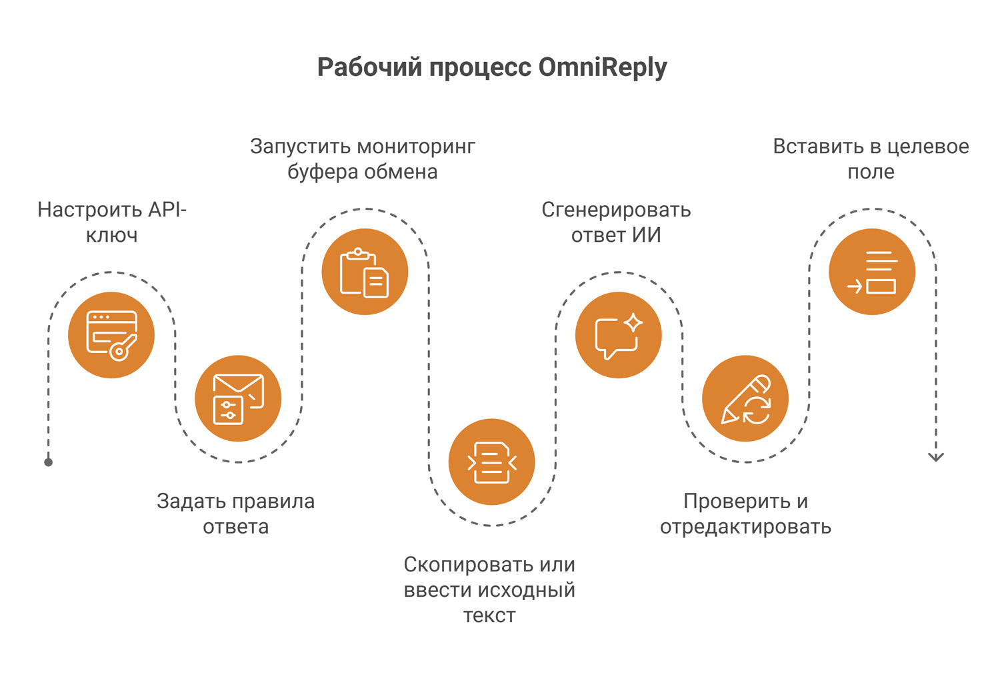
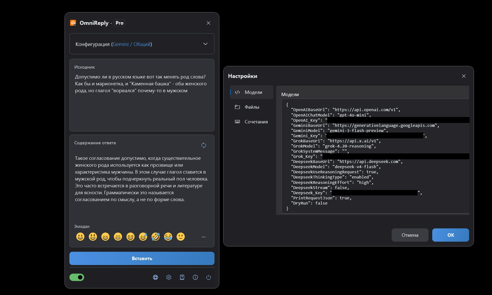
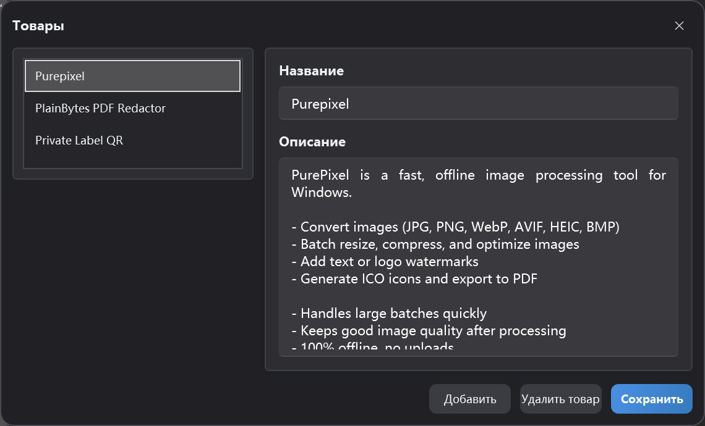

ИИ-ассистент ответов на основе буфера обмена
Руководство пользователя OmniReply
В этом руководстве описаны интерфейс OmniReply, настройка, генерация ответов ИИ и ввод текста в целевое поле. Начните с раздела «Быстрый старт», а затем при необходимости вернитесь к подробному описанию функций.
1. Знакомство с OmniReply
OmniReply помогает быстрее пройти путь от прочтения сообщения до вдумчивого ответа: захват исходного текста, генерация черновика, проверка и ввод в целевое приложение.
1.1 Что такое OmniReply
OmniReply — настольный ИИ-ассистент для ответов в Windows. Он отслеживает скопированный текст, сочетает его с выбранной моделью, сценой, языком, стилем, целью и длиной ответа, а затем формирует редактируемый ответ. После проверки черновика вы можете ввести его в поле ввода другого приложения.
1.2 Типичные сценарии
Ответы в соцсетях
Готовьте естественные ответы на комментарии, сообщения, посты и обсуждения в сообществах.
Поддержка клиентов
Превращайте вопросы пользователей в понятные объяснения, успокаивающие формулировки, рекомендации и следующие шаги.
Рекомендации продуктов
Используйте сведения о продукте для кратких рекомендаций, описания функций и сравнительных ответов.
1.3 Базовый рабочий процесс

2. Обзор интерфейса и функций
Большую часть работы вы выполняете в плавающем главном окне. Окна настроек и управления продуктами нужны в основном при первоначальной настройке.
2.1 Главное окно
| Область | Назначение | Совет |
|---|---|---|
| Заголовок | Показывает имя приложения и текущую редакцию. Окно можно свернуть в плавающий индикатор. | Сверните окно, если оно мешает, пока вы ждёте скопированный текст. |
| Конфигурация | Выбор модели, сцены, языка, стиля, цели, длины и продукта. | После смены правил перегенерируйте ответ, чтобы применить новые настройки. |
| Исходный текст | Показывает текст из буфера обмена; также можно вводить вручную. | Удобно, когда копировать неудобно или нужно сначала отредактировать исходник. |
| Ответ | Отображает сгенерированный ответ ИИ и позволяет его редактировать. | Перед вводом в поле проверяйте факты, тон и чувствительные сведения. |
| Панель эмодзи | Вставляет часто используемые эмодзи в ответ. | Эмодзи вставляются как текстовые символы — их можно редактировать и удалять. |
| Строка состояния | Управляет мониторингом буфера, языком, настройками, разделом «О программе» и выходом. | Перед автоматическим захватом включите мониторинг буфера обмена. |

2.2 Плавающий индикатор
В свёрнутом виде OmniReply отображается как плавающий индикатор. Его можно перетаскивать, дважды щёлкнуть для развёртывания главного окна и по цвету понять состояние сервиса. Цветной индикатор означает, что мониторинг буфера включён; серый — что выключен. В ожидании ответа ИИ индикатор может показывать состояние выполнения запроса.
2.3 Окно настроек
Настройки моделей
API-ключи, базовые URL и имена моделей для OpenAI, Gemini, Grok и DeepSeek.
Сетевые настройки
При необходимости включите ручной HTTP-прокси. Если отключено, OmniReply использует системные настройки прокси.
Сочетания клавиш
Глобальные сочетания для показа окна, переключения мониторинга, обновления ответа и ввода в поле.
Настройки файлов
Выбор папки истории. Если папка не указана, история не сохраняется.
2.4 Управление продуктами
Здесь хранятся названия и описания продуктов для текущего профиля. Если цель ответа — рекомендация продукта, описание выбранного продукта отправляется как контекст, чтобы ответ точнее отражал его особенности.

3. Быстрый старт
При первом использовании выполните шаги ниже. Затем обычно достаточно копировать текст, проверять ответ и вводить его в поле.
Добавить API-ключ
Откройте «Настройки» и введите API-ключ нужного сервиса ИИ. Неиспользуемые провайдеры можно оставить пустыми. Для выбранной модели нужен действующий ключ.
Настроить правила ответа
Выберите модель, сцену, язык, стиль, цель и длину ответа. Для рекомендации продукта также выберите соответствующий продукт.
Запустить мониторинг буфера обмена
Включите переключатель мониторинга в строке состояния или нажмите Ctrl + Shift + X.
Скопировать или ввести исходный текст
Скопируйте вопрос, комментарий или сообщение из другого приложения. Можно также ввести или вставить текст в OmniReply и обновить вручную.
Сгенерировать ответ ИИ
После копирования нового текста OmniReply читает его и вызывает выбранную модель. Для повторной генерации нажмите «Обновить» или Ctrl + Shift + R.
Проверить и отредактировать
Поле ответа редактируется. Измените формулировки, удалите лишнее, добавьте контекст или эмодзи. Не пропускайте проверку только потому, что черновик создан ИИ.
Вставить в целевое поле
Сначала щёлкните целевое поле ввода, чтобы установить курсор. Затем нажмите «Вставить» или Ctrl + Shift + Enter.
4. Подробности функций
В этом разделе описано, что делает каждая настройка и как она влияет на итоговый ответ.
4.1 Модели ИИ и API-ключи
| Модель | Требуемая настройка | Описание |
|---|---|---|
| ChatGPT (OpenAI) | OpenAI_Key |
Точка доступа Chat Completions, совместимая с OpenAI. Можно задать базовый URL и имя модели. |
| Gemini (Google) | Gemini_Key |
Google Gemini. Можно задать базовый URL Gemini и имя модели. |
| Grok (xAI) | Grok_Key |
xAI Grok. Можно задать базовый URL, имя модели и системное сообщение. |
| DeepSeek (DeepSeek) | Deepseek_Key |
Поддерживаются запросы в формате OpenAI или настройки reasoning DeepSeek. |
Для выбранной модели нужен соответствующий ключ. Неиспользуемые провайдеры можно не заполнять.
4.2 Правила ответа
| Правило | Эффект | Рекомендация |
|---|---|---|
| Сцена | Задаёт платформу или контекст ответа: соцсети, форумы, поддержка и т. п. | Выбирайте сцену, максимально близкую к реальному разговору. |
| Язык | Управляет языком вывода. Автовыбор старается следовать контексту исходника. | Если ответ должен быть строго на одном языке, выберите его явно. |
| Стиль | Задаёт тон, персону и формулировки. | Для публичных комментариев обычно лучше естественный, дружелюбный, ненавязчивый стиль. |
| Цель ответа | Направляет намерение: рекомендация, поддержка, объяснение, опровержение. | Перед генерацией подтвердите цель — она сильно влияет на черновик. |
| Длина ответа | Краткий, средний или подробный вывод. | Для соцсетей часто удобны короткий или автоматический режим. |
4.3 Данные для рекомендаций продуктов
Включают название и описание продукта. При выборе цели, связанной с рекомендацией, OmniReply отправляет описание выбранного продукта как контекст для ИИ. Хорошее описание должно содержать:
- Какую проблему решает продукт.
- Ключевые функции и преимущества.
- Для кого и в каких случаях он подходит.
- Работа офлайн, передача данных, важные ограничения.
- Чёткие реалистичные формулировки без преувеличений.
4.4 Мониторинг буфера обмена
При включённом мониторинге OmniReply отслеживает обновления системного буфера и читает новый текст. Чтобы снизить ложные срабатывания, игнорируются пустой текст, повторы и копирование, когда активно окно OmniReply.
4.5 Редактирование и эмодзи
Область ответа — редактируемое текстовое поле. Можно переписать текст ИИ или вставить Unicode-эмодзи с панели или из всплывающего окна. В некоторых системах или элементах WPF эмодзи могут не отображаться в цвете, но вставленные символы остаются стандартными эмодзи.
4.6 Ввод в поле и сочетания клавиш
Перед вводом OmniReply скрывает своё окно, ненадолго ждёт возврата фокуса в целевое поле, затем посимвольно имитирует ввод с клавиатуры. Перенос строки выполняется имитацией клавиши Enter. Сочетания по умолчанию:
| Действие | Сочетание по умолчанию |
|---|---|
| Показать или скрыть главное окно | Ctrl + Shift + D |
| Запустить или остановить мониторинг буфера | Ctrl + Shift + X |
| Перегенерировать ответ | Ctrl + Shift + R |
| Вставить ответ в поле | Ctrl + Shift + Enter |
4.7 История
После выбора папки истории в настройках файлов OmniReply может сохранять исходный текст, сгенерированные ответы и время запросов. Если папка не указана, история не записывается.
5. Данные, конфиденциальность и лицензия
OmniReply хранит настройки и данные профиля на вашем устройстве. Запросы к моделям отправляются напрямую в выбранный сервис ИИ.
5.1 Локально сохраняемые данные
| Данные | Описание | Управление пользователем |
|---|---|---|
| Настройки приложения | Адреса моделей, API-ключи, прокси, сочетания клавиш, папка истории и связанные параметры. | Просмотр и изменение в окне «Настройки». |
| Профили и данные продуктов | Текущий профиль, список продуктов, выбранная сцена и правила ответа. | Управление в главном окне и в разделе управления продуктами. |
5.2 Что отправляется в запросах ИИ
При генерации ответа OmniReply отправляет в выбранный сервис ИИ исходный текст, текущие правила ответа, необходимый контекст продукта и параметры запроса к модели. Запросы выполняются вашим API-ключом. OmniReply не направляет их через промежуточный сервер.
5.3 Безопасность API-ключей
- Не передавайте файлы конфигурации с API-ключами другим людям.
- На общих компьютерах перед уходом убедитесь, что настройки и история обработаны надлежащим образом.
- Перед копированием конфиденциального содержимого изучите политику конфиденциальности и обработки данных выбранного сервиса ИИ.
- Если папка истории не задана, OmniReply не сохраняет исходный текст и историю ответов.
5.4 Версии Free и Pro
| Редакция | Описание |
|---|---|
| Free | До 10 генераций моделью за локальный календарный день; возможны ограничения на часть правил. |
| Pro | Открывает возможности Pro. Покупка и статус лицензии отображаются в окне лицензии приложения. |
6. Вопросы и устранение неполадок
Если что-то работает не так, начните отсюда. Чаще всего причина в переключателе мониторинга, API-ключах, прокси, конфликте сочетаний или фокусе в целевом поле.
6.1 После копирования ничего не происходит
Проверьте по порядку:
- Включён ли мониторинг буфера обмена в строке состояния.
- Является ли скопированное содержимое обычным текстом и не пустым ли оно.
- Не ждёт ли OmniReply завершения предыдущего запроса ИИ.
- Не совпадает ли скопированный текст с предыдущим захваченным.
- Не копировали ли вы внутри окна OmniReply — копирование из активного окна OmniReply игнорируется.
6.2 API-ключ не настроен
У провайдера выбранной модели нет ключа. Откройте «Настройки», введите ключ для этого провайдера или переключитесь на модель с уже настроенным ключом.
6.3 Запрос ИИ не выполнен или истёк
Частые причины: недействительный ключ, исчерпанная квота, перегрузка сервиса, сеть, неверный прокси или тайм-аут. Сначала убедитесь, что браузер и системный прокси достигают нужного сервиса ИИ, затем проверьте базовый URL, имя модели и ключ в настройках.
6.4 Язык или стиль ответа не соответствуют ожиданиям
Проверьте язык, сцену, стиль, цель и длину ответа. Для моделей, совместимых с OpenAI, фиксированный язык включается в системный промпт. Если результат нестабилен, явно задайте целевой язык и перегенерируйте ответ.
6.5 Текст введён не в то место
Перед вводом щёлкните целевое поле и убедитесь, что курсор на месте. Ввод имитирует клавиатуру: если фокус в другом окне или элементе, текст попадёт туда.
6.6 Сочетания клавиш не работают
Сочетание может быть занято другим приложением. Откройте вкладку «Сочетания» в настройках и выберите комбинацию с Ctrl, Shift, Alt или Win, избегая конфликтов с системой.
6.7 Проблемы с отображением эмодзи
В некоторых системах текстовые поля WPF могут ненадёжно показывать цветные эмодзи. Даже если в OmniReply они монохромные, вставленные и введённые символы обычно остаются стандартными Unicode-эмодзи. Цвет в целевом приложении зависит от него и от шрифтов системы.
6.8 История не сохранилась
История сохраняется только при указанной папке в настройках файлов. Пустое значение означает, что история не ведётся. Убедитесь, что папка существует и у вашей учётной записи есть права на запись.
6.9 Что указать в обращении в поддержку
Укажите версию приложения, версию Windows, выбранную модель, текст ошибки, использование прокси, воспроизводимость, шаги воспроизведения и при необходимости скриншоты. Не отправляйте настоящие API-ключи.